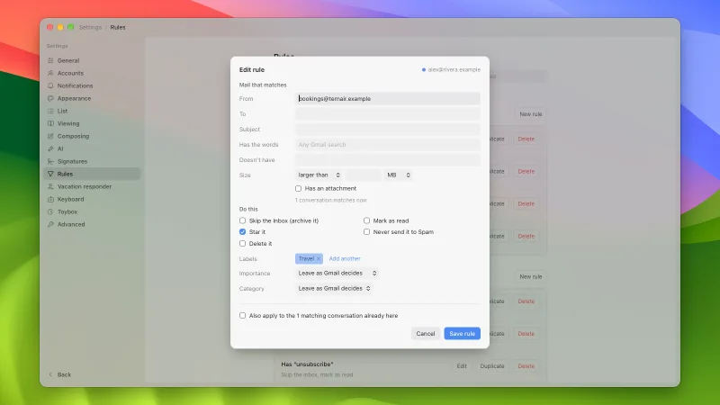
Rules
Your Gmail filters. Match on sender, recipient, subject, words, size or attachments, and the editor says how many conversations match now. Google runs them, even when Mailboat is closed.
v0.2 · macOS and Windows · free and open source
A fast, keyboard-first Gmail client that talks to Gmail's API directly. Your mail stays on your computer.
Apple silicon Macs · 64-bit Windows · the app walks you through setup, about ten minutes
Download for Windows on Arm · All downloads and checksums
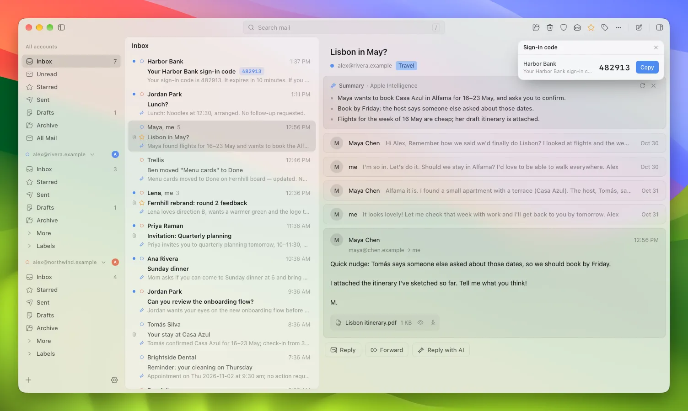
Gmail API, not IMAP
Labels stay labels, your filters and signatures are Gmail's own, and search takes Gmail's own terms, like from: and has:attachment. No app passwords, and no server in between.
Your Gmail settings
These live in your Gmail settings, so they follow you to every device, and rules and the vacation reply keep working when Mailboat is closed.

Your Gmail filters. Match on sender, recipient, subject, words, size or attachments, and the editor says how many conversations match now. Google runs them, even when Mailboat is closed.
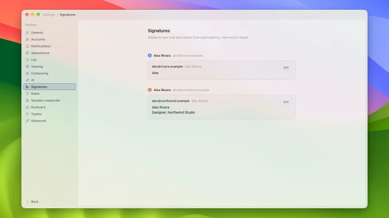
One signature per address, kept in Gmail. New mail and replies get the right one for the From address.
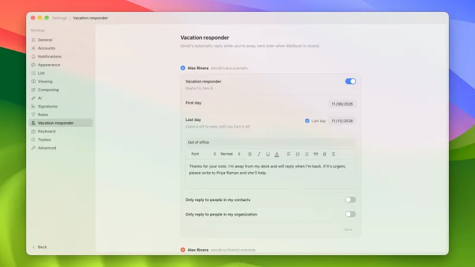
Gmail's out-of-office reply: the first and last day, a subject, a formatted message, and who gets it. Google sends it, even when Mailboat is closed.
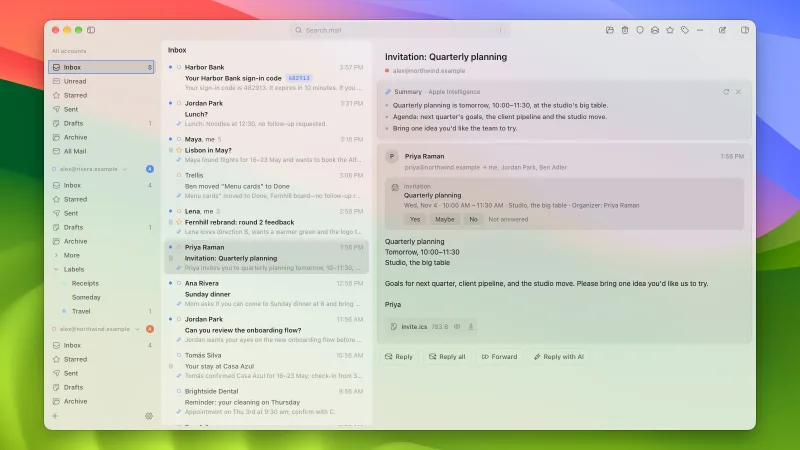
Answer Yes, Maybe or No in the email itself. The answer goes through Google Calendar.
AI, if you want it
Write with AI
Say how to reply, or tap a reply idea, and the assistant drafts it from the conversation. Refine it, then insert or replace. Nothing is sent until you press Send. It can also translate an email, or what you're writing, into another language.
Apple Intelligence runs on your Mac. You can use your own Claude or ChatGPT subscription instead, with no API keys.
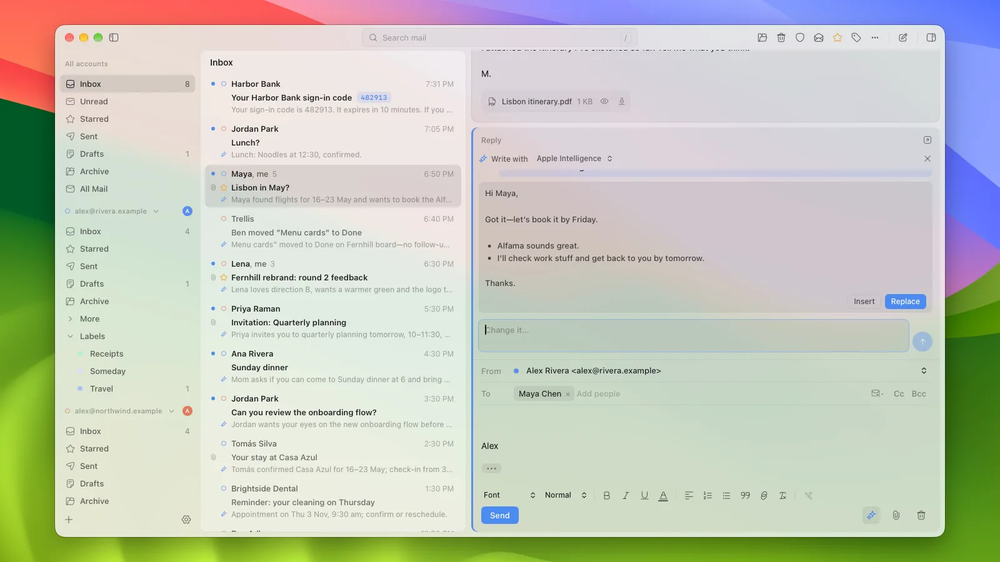
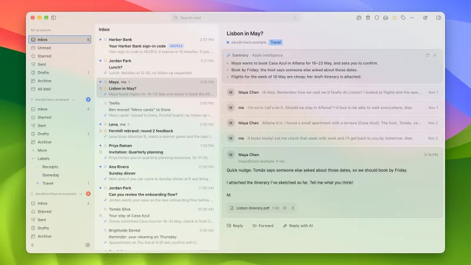
A few points above a long conversation, and a one-line summary in place of each row's first words. With Apple Intelligence they are written on your Mac.
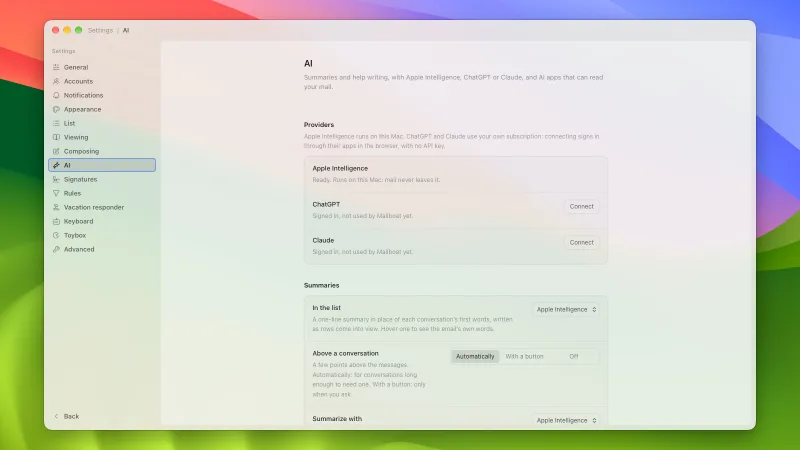
Choose which AI does what: summaries in the list, summaries above a conversation, and writing. Apple Intelligence keeps everything on your Mac; ChatGPT and Claude use your own sign-in.
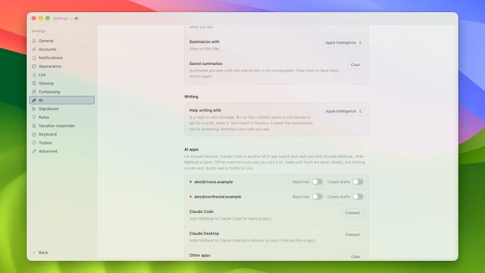
Let Claude Desktop, Claude Code or another MCP app search and read your mail and save drafts. One click adds Mailboat to Claude. It is off for every account until you turn it on, and nothing is ever sent for you.
Reading and finding mail
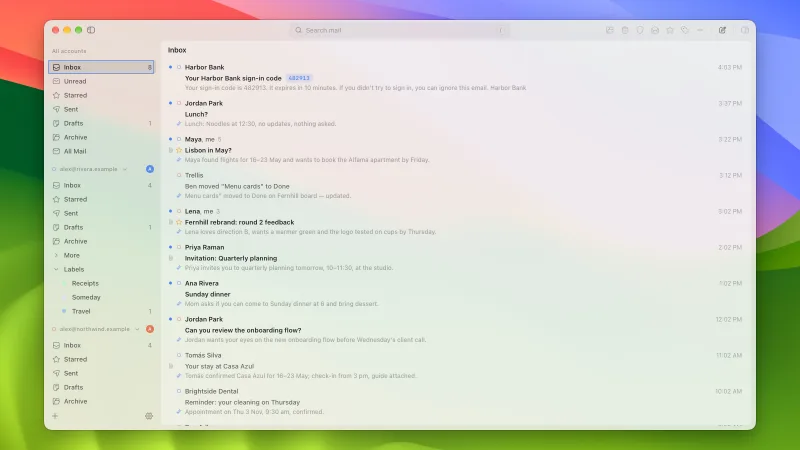
Every account in one list, each with its own color. Threads never merge across accounts, and every action uses the account the mail belongs to.
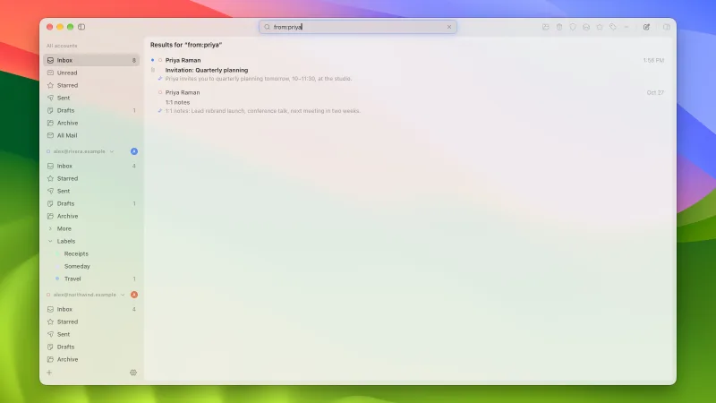
Instant local search across all accounts, with Gmail's own operators (from:, has:attachment and the rest) merged in as the answer arrives.
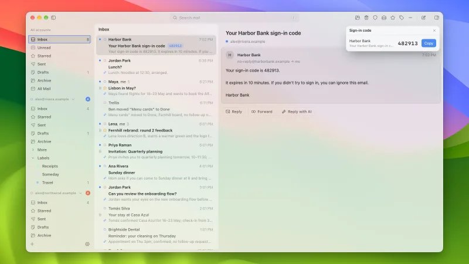
One-time codes appear as a pill on the row: click it to copy. Notifications lead with the code and have a Copy button.
Fast, and yours
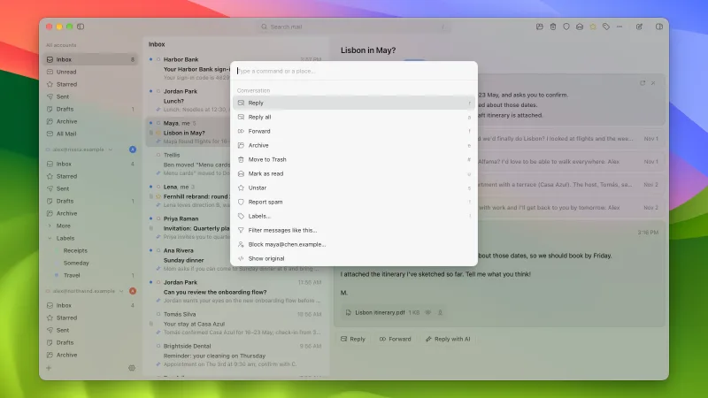
⌘K (Ctrl+K on Windows) opens every action for the conversation in front of you, with its shortcut.
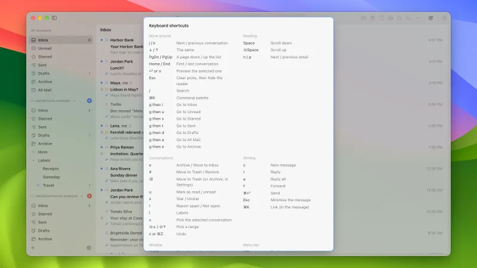
Gmail's own keys (j and k, e, #, g then i, c, r) plus extras, with a cheat sheet one question mark away.
Swipe a conversation to the left to archive it from the inbox (in Trash it goes back to the inbox, anywhere else it moves to Trash), then undo with the toast or the z key. Settings chooses what each swipe does.
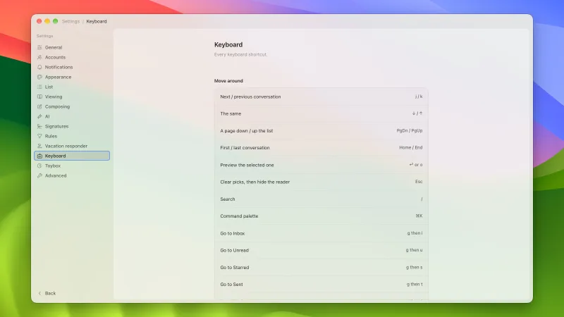
Every shortcut, listed in one place in Settings.
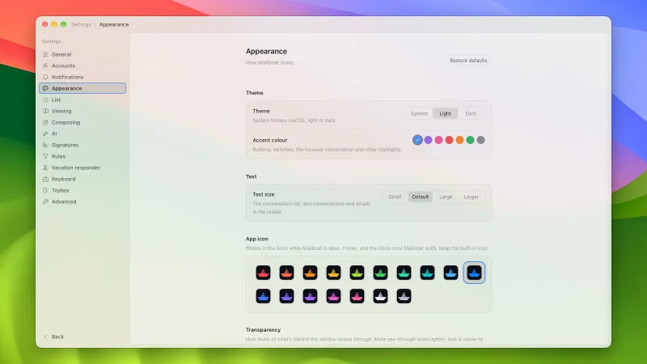
Light, dark or follow your system; seven accent colors; four text sizes; seventeen app icons for the Dock; and a transparency control for how much shows through the window.
For fun
A koi pond
Pick a toy, and after a minute without input a screensaver scene plays over the empty view. There are ten pixel-art scenes in six color schemes, or a random one.
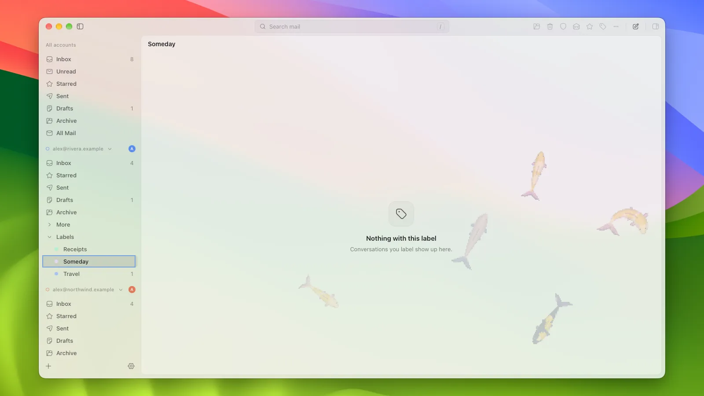
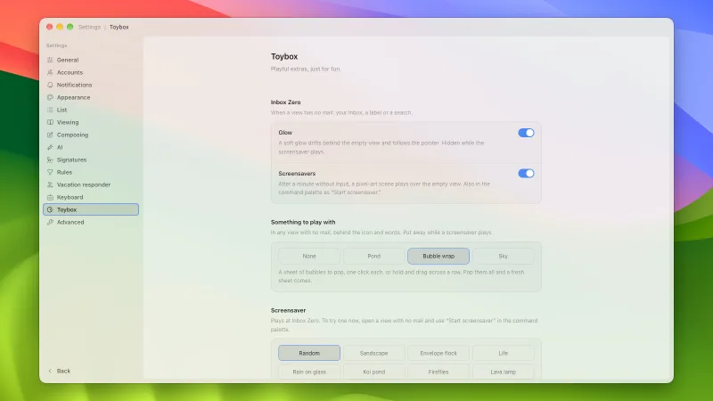
The glow, the screensavers and the toy behind an empty view, in one settings page.
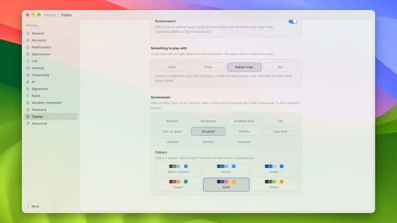
Pick one scene or a random one, and a color scheme: mono, accent, ocean, desert, dusk or forest.
No Mailboat account and no Mailboat server. Mail goes from Google to your computer and is kept there. Read the privacy policy